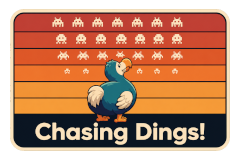

Tipa digs into EverQuest Legends’ Kunark expansion, where cash-shop Reincarnation and a Denon’s Desperate Dirge nerf have players side-eyeing progression. Wilhelm finds Over the Hill’s Asgard Mountain tougher and more rewarding, with rougher trails, nastier recoveries, and exploration that finally makes the scenery feel earned.
Wilhelm finds Over the Hill’s Asgard Mountain tougher and more rewarding, with rougher trails, nastier recoveries, and exploration that finally makes the scenery feel earned.
 Kelly unloads on Nvidia CEO Jensen Huang over the reported affair and alleged leak implications, with extra disgust reserved for the family fallout.
Kelly unloads on Nvidia CEO Jensen Huang over the reported affair and alleged leak implications, with extra disgust reserved for the family fallout.
 Bruce Schneier flags Penlink’s Webloc, which lets police mine location trails from weather, gaming, email, and religious apps on your phone.
Bruce Schneier flags Penlink’s Webloc, which lets police mine location trails from weather, gaming, email, and religious apps on your phone.
 Dave Winer asks non-techie writers about their Markdown setups, then pivots hard into backing Bernie Sanders as the Democrats’ path forward.
Dave Winer asks non-techie writers about their Markdown setups, then pivots hard into backing Bernie Sanders as the Democrats’ path forward.
 Bhagpuss explains why Soulframe keeps taking over the blog: early impressions are fun to write, and he’s plainly having a great time with it.
Bhagpuss explains why Soulframe keeps taking over the blog: early impressions are fun to write, and he’s plainly having a great time with it.